Chipset, AXIS OS 13 readiness, DLPU / MLPU, list price and field of view — and what is already sitting on your network. 4XS Toolbox puts the facts you actually spec on next to every camera, in the places you are already looking: the Axis Product Selector, axis.com search, every product and category page, a toolbar popup that searches all 432 priced SKUs, and a map that picks cameras from the coverage you draw.
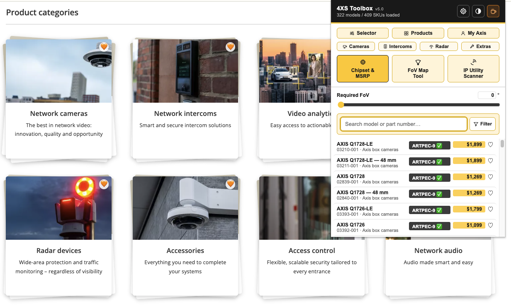
Chipset decides which analytics run on it. Field of view decides whether it covers the scene. Price decides whether it gets signed off. All three sit on the page you are already reading — no second tab, no spreadsheet.
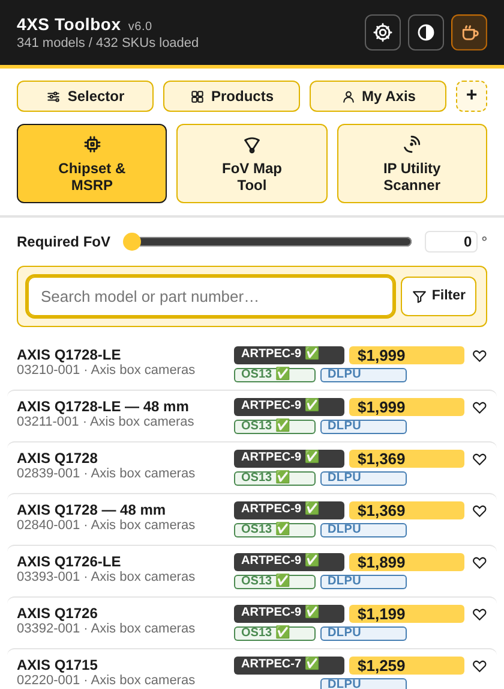
Search 341 models and 432 priced SKUs by name or Axis part number, from any tab. Every row carries its chipset, its list price and a heart that pins it to the top of every list in the extension. Click a model name, part number or category to copy it.
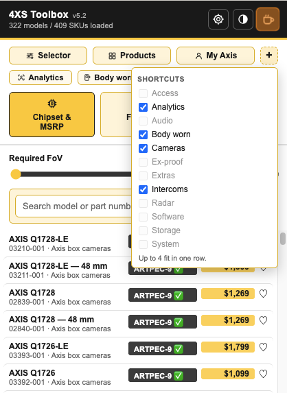
Pick your Axis product categories from the popup itself — + at the end of the quick-link row — or keep hearting tiles on axis.com; both write the same four shortcuts and stay in sync. Four is the cap, the same one axis.com uses, so the labels never squeeze to an ellipsis.
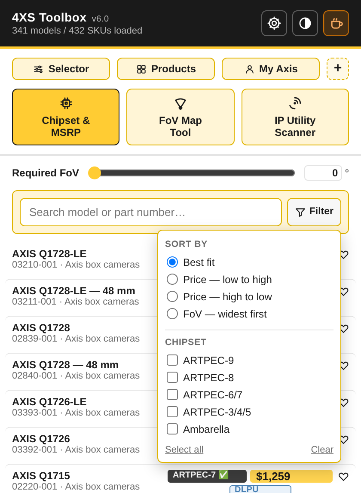
Narrow to the ARTPEC or Ambarella generation your analytics need, then sort by price or by widest field of view. Favourites stay pinned on top whichever order you choose, and the filter applies to both the catalogue and the map results at once.
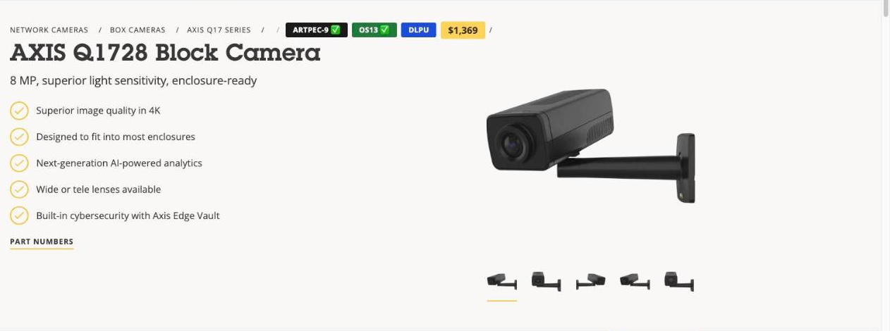
Two questions that used to mean a support page and a datasheet, now answered in the badge row. OS 13 is resolved per model from Axis’s own Y2038 guidance — ARTPEC-6 products never make the jump, and where the published sources genuinely disagree the badge stays quiet rather than guessing. DLPU / MLPU comes from Axis’s own Product selector feed, because chipset generation is no shortcut: ARTPEC-7 alone spans deep learning, machine learning and no compute unit at all.
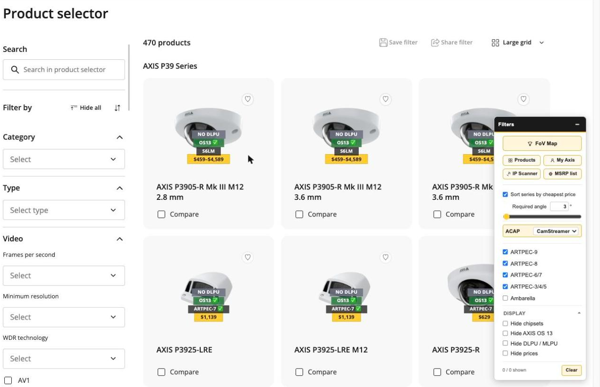
Every recognised product tile gets up to four badges — chipset, AXIS OS 13, DLPU / MLPU and price — on the Product Selector, search results, product and category pages, and inside the Compare Products table. Each of the four switches off independently in Settings.
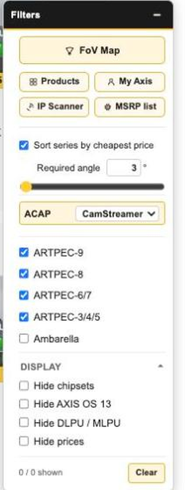
Multi-select chipset filtering, a required-angle slider, an ACAP dropdown that narrows to what CamStreamer supports, and cheapest-first series sorting — all applied live to the page, with your pinned categories and tools one click away at the top.
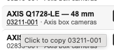
Part number into the quote, model name into the email, category into the spec — click the field you want and it is on the clipboard, with a checkmark to confirm. Multipack SKUs drop their (10 pcs) suffix so what you paste is the number Axis actually orders against.
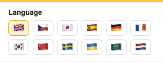
Every string in the popup, the panel and the scanner is translated into twelve languages — English, Czech, Japanese, Spanish, German, French, Korean, Chinese, Swedish, Ukrainian, Arabic and Dutch. It picks one from your browser on first run; the flag row switches it any time.
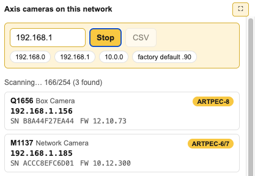
Axis only ever shipped AXIS IP Utility for Windows. Every Mac and Linux integrator has been stuck borrowing a laptop, running a VM, or guessing addresses.
This is the same job done in the browser, so it runs anywhere Chrome or Firefox does — macOS, Windows, Linux, ChromeOS. Type the subnet, press Scan, and watch devices appear as they answer: model, IP, serial, firmware and chipset, straight from the cameras over VAPIX, with no install and nothing leaving the machine.
Drop a pin where the camera goes, drag the wedge over what it has to see, and the list underneath becomes the models that actually cover it — ranked by how tightly they fit, not by how wide they are.
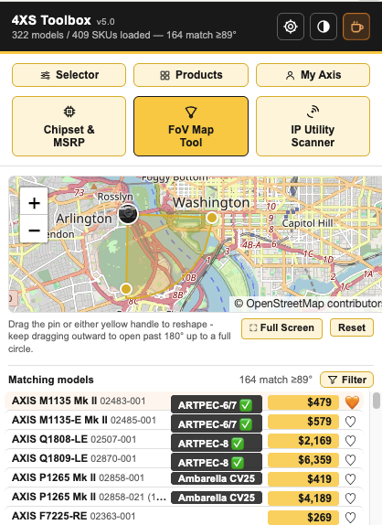
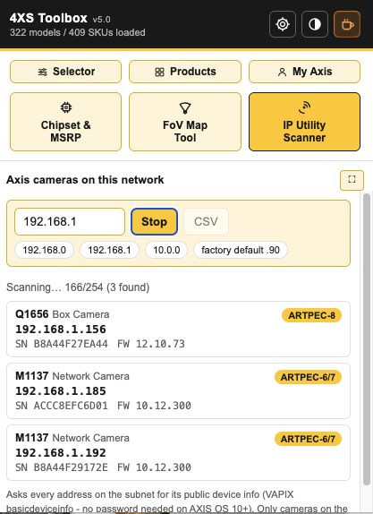
Type a subnet, press Scan, and get every Axis device that answers — model, IP, serial, firmware and chipset — with a CSV export for the handover document. Results stream in as the sweep runs, so you are not waiting on all 254 addresses to see the first camera.
basicdeviceinfo — no password needed on AXIS OS 10 and later.192.168.0, 192.168.1, 10.0.0 and the factory-default .90 address.The popup follows your choice, not your operating system’s — one click in the header. Every string is translated into twelve languages, with prices in EUR, USD, GBP or JPY, or hidden entirely when you are sharing your screen with a customer.
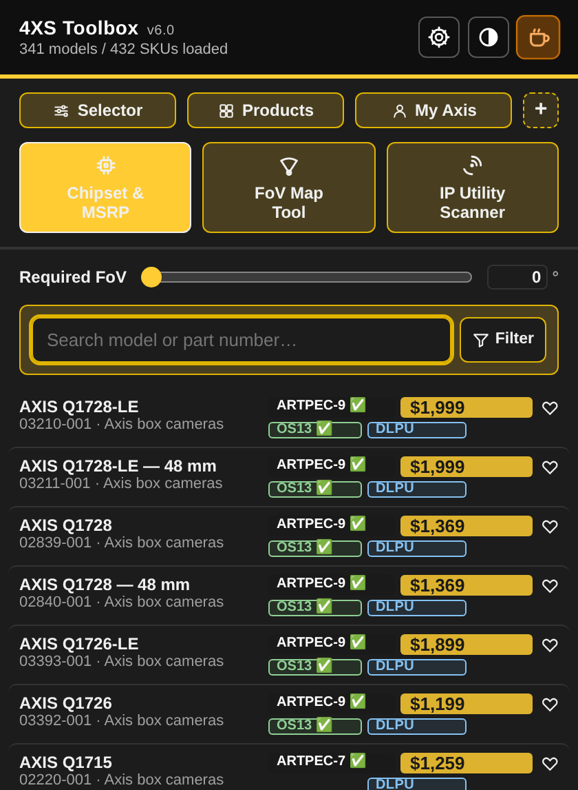
Also on addons.mozilla.org for Firefox. Prefer to build it yourself? The full source is on GitHub.
The bundled catalogue is the published AXIS Price List. When a new one lands in your inbox, drop the .xls on the settings page and every badge, every popup row and every map result uses your figures instead — no reinstall, no waiting for a release.
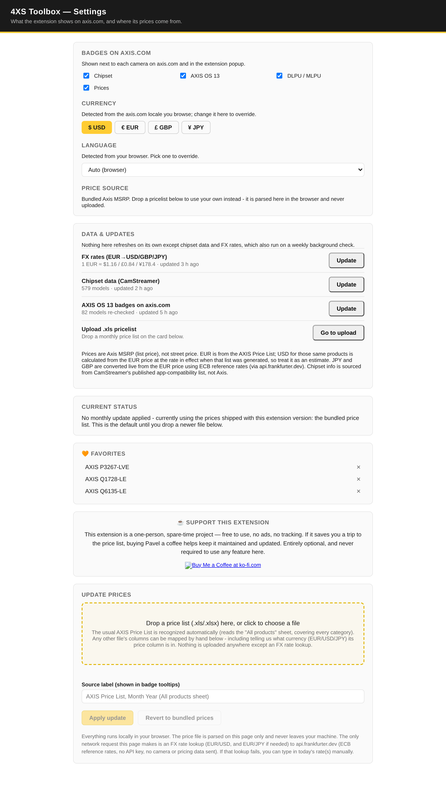
catalog-data.js holds one entry per SKU, extracted from the published AXIS Price List. EUR is the one defined list-price figure; USD, GBP and JPY are FX-derived from it and marked with a leading ~, so an approximation always looks like one.
chipset-data.js bundles a snapshot parsed from CamStreamer’s supported-hardware list — refreshed weekly by the background service worker, or on demand from the popup.
fov-data.js carries each model’s minimum and maximum horizontal angle. A PTZ’s full pan range is treated as coverage only where that is honest — and a model with no FoV data is never counted as a match.
Scan results are read directly from the cameras over VAPIX and kept in local storage. Nothing is sent anywhere — there is no server behind this extension, no account and no analytics.